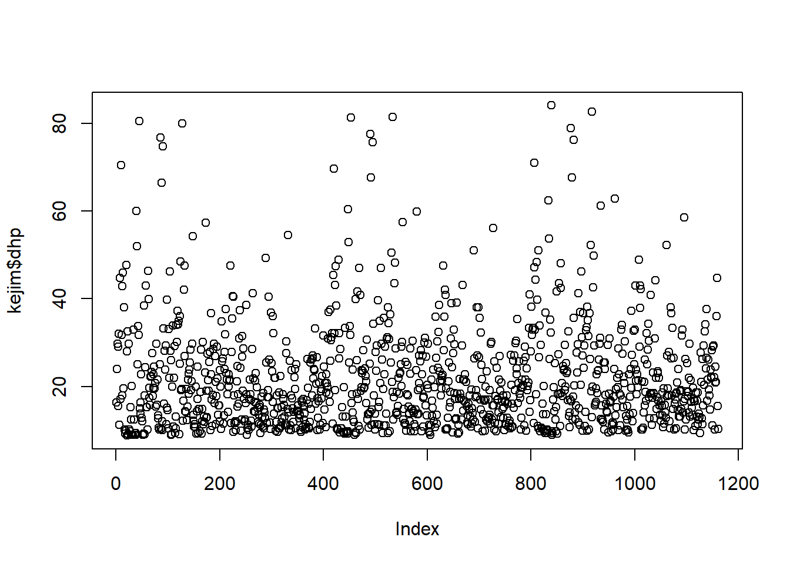
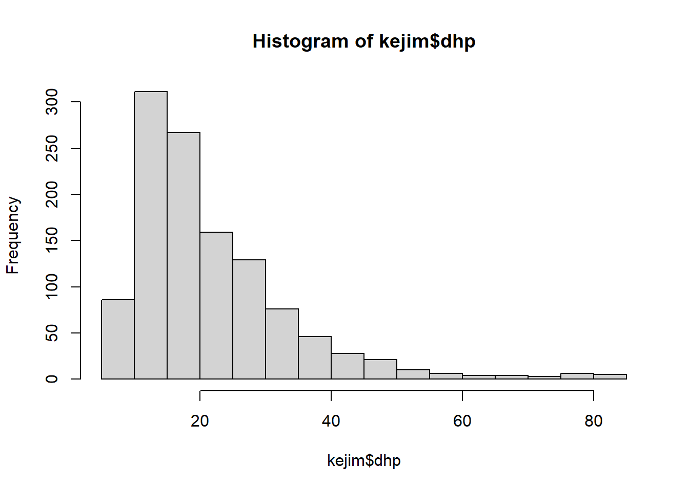

Pourquoi écrire des programmes (ou scripts) pour réaliser ses analyses de données, plutôt que d’utiliser un logiciel à interface graphique (ex.: Excel)? Apprendre un language comme R demande plus de temps au départ, mais apporte plusieurs bénéfices.
Les scripts constituent un registre fidèle des analyses effectuées sur un jeu de données. Vous et vos collègues pourrez facilement reproduire cette analyse à l’avenir (ex.: lorsque de nouvelles données sont disponibles).
Les scripts permettent d’automatiser des tâches répétitives (ex.: effectuer la même analyse sur 100 fichiers de données).
Les fonctions et types de données de base sont conçus pour les statistiques.
L’accès libre au logiciel facilite le partage de programmes entre groupes de recherche.
De nombreux modules existent pour des analyses spécialisées dans différents domaines, dont l’écologie.
Vu la grande communauté d’utilisateurs, il est facile de trouver de l’aide en ligne.
Le logiciel RStudio est un environnement de programmation (IDE) avec plusieurs fonctionalités qui simplifient l’utilisation interactive du langage R.
Par défaut, la fenêtre RStudio est divisée en 4 sections. Nous utiliserons d’abord la console (coin inférieur gauche).
Découvrir les fonctions de base du langage R.
Se familiariser avec l’interface de RStudio.
Connaître les principaux types de données (nombre, texte, valeurs logiques) et structures de données (vecteur, liste, matrice, tableau de données) dans R.
Charger un tableau de données provenant d’un fichier externe.
Sélectionner des éléments dans une structure de données.
Écrire ses propres fonctions.
Le symbole > dans la console indique que R est prêt à recevoir une commande. R comprend les opérations arithmétiques de base, comme le ferait une calculatrice. Ces opérations incluent +, -, *, / et ^ (puissance).
(4 + 3) * 2## [1] 145^3## [1] 125Question: Pourquoi le résultat est-il précédé de
[1]?Réponse: R indique ainsi qu’il s’agit du premier élément du résultat. Dans ce cas-ci, il ne comporte qu’un élément.
On utilise == pour vérifier si deux expressions sont égales et != pour voir si elles sont différentes. R reconnaît aussi les comparaisons <, <=, > et >=.
(4 + 3) * 2 != 4 + (3 * 2)## [1] TRUEPlusieurs fonctions mathématiques sont définies dans R, comme exp, log, sqrt (racine carrée), ainsi que les fonctions trigonométriques et des constantes comme pi.
cos(pi)## [1] -1En remplaçant \(x\) par un nombre de votre choix, transcrivez dans R la proposition suivante et vérifiez qu’elle retourne TRUE.
\[(\sin x)^2 + (\cos x)^2 = 1\]
Notez que les parenthèses () jouent deux rôles en R:
(4 + 3) * 2).Par exemple, la fonction seq(a, b) crée une séquence de nombres entiers entre a et b:
seq(1, 50)## [1] 1 2 3 4 5 6 7 8 9 10 11 12 13 14 15 16 17 18 19 20 21 22 23 24 25
## [26] 26 27 28 29 30 31 32 33 34 35 36 37 38 39 40 41 42 43 44 45 46 47 48 49 50L’opérateur <- permet d’assigner la valeur d’une expression à une variable. Si la variable n’existe pas, elle est créée par R à ce moment.
x <- 5:10Notez que l’opérateur : est un raccourci pour l’instruction seq(5, 10).
Truc: Pour économiser un peu de temps dans RStudio, le raccourci clavier
Alt+-produit l’opérateur<-.
Pour retrouver la valeur d’une variable, il suffit d’inscrire son nom:
x## [1] 5 6 7 8 9 10Remarquez aussi que la variable x est apparue dans l’onglet Environment (coin supérieur droit) dans RStudio. Cet onglet vous permet de consulter rapidement toutes les variables actuellement en mémoire.
Dans R, le nom d’un objet reconnu par le logiciel (variable, fonction, etc.) doit commencer par une lettre et peut inclure des lettres, des chiffres ainsi que les caractères _ ou .. Notez que R différencie les majuscules et minuscules.
X## Error in eval(expr, envir, enclos): objet 'X' introuvableConseils:
Pour que le code soit plus lisible, les noms d’objets doivent (tout en restant brefs) offir de l’information sur leur contenu. Par exemple,
diametreoudiamplutôt quedoux.Il est préférable d’adopter un style uniforme pour les noms d’objets. Nous recommandons d’utiliser seulement des minuscules et de séparer les noms composés par
_, ex.:temp_minpour température minimale.
Pour représenter des données de type textuelles, on utilise des chaînes de caractères, qui doivent être entourées de guillemets pour les différencier des commandes et objets du code.
s <- "du texte"Note: Des guillemets simples (’) sont aussi acceptés par R, mais nous utiliserons seulement des guillemets doubles par souci de constance.
On peut consulter la documentation sur une fonction en précédant son nom d’un point d’interrogation, ex.: ?seq. Dans RStudio, la page d’aide s’affiche sous l’onglet Help (coin inférieur droit). Si on ne connaît pas le nom exact de la fonction, on utilise deux points d’interrogation, ex.: ??logarithm. Vous pouvez aussi écrire directement dans la fenêtre de recherche de l’onglet Help.
De nombreux sites web offre de l’information sur R. Souvent, la façon la plus rapide d’obtenir de l’aide pour un problème spécifique est d’écrire sa question dans un moteur de recherche.
La variable x que nous avons créée plus tôt est un vecteur comprenant 6 éléments (les nombres 5 à 10). Le vecteur est la structure de données la plus simple en R; une variable comprenant un seul élément est en fait un vecteur de longueur 1. Tous les éléments d’un vecteur doivent être du même type de données. On peut déterminer la longueur d’un vecteur avec la fonction length, et son type avec la fonction class.
length(x)## [1] 6class(x)## [1] "integer"Jusqu’à maintenant, nous avons entré des commandes directement dans la console. Pour sauvegarder une liste de commandes, qui deviendra éventuellement un script d’analyse, nous utiliserons l’éditeur dans RStudio (coin supérieur gauche).
Note: Lorsque vous ouvrez une nouvelle session sur RStudio, un script vide devrait apparaître dans l’éditeur. Si ce n’est pas le cas, allez dans File -> New File -> R Script pour créer un nouveau script.
La fonction c combine plusieurs valeurs dans un vecteur.
Entrez les commandes suivantes dans l’éditeur, puis exécutez-les avec le bouton Run (en haut à droite de l’éditeur) ou avec le raccourci clavier Ctrl+Enter. Dans les deux cas, le curseur doit être placé sur la ligne à exécuter. Vous pouvez aussi sélectionner un bloc de lignes à exécuter d’un coup.
# Diamètre en cm et espèce de trois arbres
diam <- c(7.5, 3, 1.4)
espece <- c("sapin", "pin", "bouleau")Les lignes commençant par # ne sont jamais exécutées par R. Il s’agit de commentaires qui permettent d’ajouter du contexte et de clarifier le but d’une section du code.
Quel est le type de données du vecteur espece?
Qu’arrive-t-il si vous essayez de créer un vecteur avec différents types de données, ex.: c(1, 2, "pin")?
Dans R, les opérations mathématiques de base sont vectorisées, c’est-à-dire qu’elles s’appliquent séparément à chaque élément d’un vecteur.
v <- c(1, 4, 9)
sqrt(v)## [1] 1 2 3v + c(10, 20, 30)## [1] 11 24 39Si les deux vecteurs n’ont pas le même nombre d’éléments, le vecteur le plus court est “recyclé”; cela est surtout utile pour les opérations impliquant un vecteur et une valeur unique.
diam10 <- diam * 10
diam## [1] 7.5 3.0 1.4esp_pin <- espece == "pin"
esp_pin## [1] FALSE TRUE FALSENotez que la variable esp_pin est de type logique (vrai/faux).
integer (nombres entiers)numeric (nombres réels, aussi appelé double)character (chaînes de caractères)logical (valeurs possibles TRUE ou FALSE, toujours en majuscules)Un tableau de données est une structure de données en deux dimensions formée en combinant des vecteurs de même grandeur. Il est utilisé pour représenter une série d’observations (rangées) d’un même ensemble de variables (colonnes).
arbres <- data.frame(espece, diam)
arbres## espece diam
## 1 sapin 7.5
## 2 pin 3.0
## 3 bouleau 1.4La fonction str() permet d’obtenir plus de détails sur la structure d’un objet.
str(arbres)## 'data.frame': 3 obs. of 2 variables:
## $ espece: chr "sapin" "pin" "bouleau"
## $ diam : num 7.5 3 1.4La plupart du temps, on souhaite charger des tableaux de données existants plutôt que de les créer dans R. Nous verrons ici comment importer des données enregistrées en format CSV (comma-separated values).
Tout d’abord, il faut s’assurer que R pointe vers le bon répertoire de travail. Dans l’onglet Files (coin inférieur droit de RStudio), utilisez le bouton “…” à droite pour naviguer vers le répertoire contenant le fichier de données cours1_kejimkujik.csv, puis cliquez sur More -> Set As Working Directory. (On peut aussi appeler la fonction setwd dans R avec un chemin vers le répertoire.) Le répertoire de travail actuel s’affiche sur la ligne en haut de la console.
Ensuite, appelons la fonction read.csv pour charger les données d’inventaire d’arbres dans des parcelles du Parc national de Kejimkujik (Nouvelle-Écosse):
kejim <- read.csv("cours1_kejimkujik.csv")
str(kejim)## 'data.frame': 1161 obs. of 9 variables:
## $ site : chr "BD" "BD" "BD" "BD" ...
## $ parcelle : chr "A" "A" "A" "A" ...
## $ jour : int 31 31 31 31 31 31 31 31 31 31 ...
## $ mois : int 8 8 8 8 8 8 8 8 8 8 ...
## $ annee : int 2004 2004 2004 2004 2004 2004 2004 2004 2004 2004 ...
## $ num_arbre: int 1 2 6 7 8 9 10 11 12 13 ...
## $ nb_tiges : int 1 1 1 1 1 1 1 1 1 1 ...
## $ espece : chr "TSCA" "TSCA" "TSCA" "ACRU" ...
## $ dhp : num 16.3 24 29.8 29 15.5 32 11.3 44.8 17.2 70.5 ...Trucs
La touche Tab donne accès à plusieurs types d’aide dans RStudio, dépendamment du contexte. Par exemple, on peut obtenir:
- une liste de fonctions commençant par une combinaison de lettres déjà entrée;
- les arguments possibles pour la fonction (si le curseur est entre les parenthèses);
- la liste des fichiers du répertoire de travail (si le curseur est entre guillemets).
La version française de logiciels comme Excel utilise la virgule comme signe décimal, et produit des fichiers CSV avec le point-virgule comme séparateur de champs. Pour ce type de fichier, il faut remplacer
read.csvparread.csv2.
La fonction head montre les premières rangées (par défaut, les 6 premières) d’un tableau de données.
head(kejim)## site parcelle jour mois annee num_arbre nb_tiges espece dhp
## 1 BD A 31 8 2004 1 1 TSCA 16.3
## 2 BD A 31 8 2004 2 1 TSCA 24.0
## 3 BD A 31 8 2004 6 1 TSCA 29.8
## 4 BD A 31 8 2004 7 1 ACRU 29.0
## 5 BD A 31 8 2004 8 1 TSCA 15.5
## 6 BD A 31 8 2004 9 1 TSCA 32.0La fonction dim donne les dimensions (rangées, colonnes) du tableau de données. On peut aussi obtenir ces dimensions séparément avec nrow et ncol.
dim(kejim)## [1] 1161 9Dans R, l’opérateur $ permet d’extraire une partie d’un objet complexe, et en particulier, d’extraire une variable (colonne) d’un tableau de données.
dhp <- kejim$dhpIci, le résultat dhp est un vecteur numérique.
Pour extraire certains éléments d’un vecteur selon leur position, on utilise les crochets ([]):
dhp[2]## [1] 24dhp5 <- dhp[1:5]
dhp5## [1] 16.3 24.0 29.8 29.0 15.5Dans le deuxième cas, nous avons donné un vecteur de positions pour extraire les 5 premières valeurs de dhp.
Avec des nombres négatifs, on peut exclure les valeurs à certaines positions:
dhp5[-2]## [1] 16.3 29.8 29.0 15.5Finalement, il est possible de sélectionner des valeurs selon une condition logique. Dans l’instruction ci-dessous, R détermine les positions des valeurs TRUE dans le vecteur logique dhp5 > 20, puis extrait les valeurs de dhp5 correspondant à ses positions:
dhp5[dhp5 > 20]## [1] 24.0 29.8 29.0Pour remplacer certains éléments d’un vecteur (ou d’une colonne d’un tableau de données), nous pouvons combiner la sélection et l’assignation de valeur. Le code suivant remplace les valeurs de DHP inférieures à 1 par la valeur 1.
dhp[dhp < 1] <- 1esp_dhp50 <- kejim$espece[kejim$dhp > 50] On peut aussi utiliser la notation [] pour extraire une partie d’un tableau de données. Dans ce cas, le choix des rangées et des colonnes est séparé par une virgule:
kejim[1:5, 6:9]## num_arbre nb_tiges espece dhp
## 1 1 1 TSCA 16.3
## 2 2 1 TSCA 24.0
## 3 6 1 TSCA 29.8
## 4 7 1 ACRU 29.0
## 5 8 1 TSCA 15.5On peut aussi choisir les colonnes avec un vecteur de noms:
kejim2 <- kejim[, c("num_arbre", "espece", "dhp")]
str(kejim2)## 'data.frame': 1161 obs. of 3 variables:
## $ num_arbre: int 1 2 6 7 8 9 10 11 12 13 ...
## $ espece : chr "TSCA" "TSCA" "TSCA" "ACRU" ...
## $ dhp : num 16.3 24 29.8 29 15.5 32 11.3 44.8 17.2 70.5 ...Notes:
L’absence d’informations avant la virgule signifie qu’on souhaite conserver toutes les rangées.
Les noms de colonnes sont entre guillemets ici, contrairement au cas où on extrait une seule colonne avec $.
R contient certaines fonctions de base pour visualiser des données. Dans l’exemple, ci-dessous, la fonction plot affiche les valeurs d’un vecteur dans l’ordre de leur position (index) et la fonction hist montre l’histogramme de ces valeurs.
plot(kejim$dhp)
hist(kejim$dhp)
La fonction plot crée différents types de graphiques selon ses arguments; en lui donnant deux vecteurs numériques, elle produit un nuage de points.
Au prochain laboratoire, nous verrons comment réaliser des graphiques plus complexes et personnalisés à l’aide du package ggplot2.
Une matrice est une structure de données en deux dimensions où tous les éléments ont le même type. On peut la créer avec la fonction matrix.
mat1 <- matrix(1:12, nrow = 3)
mat1## [,1] [,2] [,3] [,4]
## [1,] 1 4 7 10
## [2,] 2 5 8 11
## [3,] 3 6 9 12Comme pour un tableau de données, on extrait les éléments d’une matrice en spécifiant deux vecteurs d’indices:
mat1[2, 3]## [1] 8mat1[1:2, 2:3]## [,1] [,2]
## [1,] 4 7
## [2,] 5 8Contrairement à un vecteur, une liste peut contenir des objets de types différents. On crée une liste avec la fonction list et on en extrait des éléments individuels à l’aide de crochets doubles [[ ]].
liste1 <- list(1, 2, "ab")
liste1## [[1]]
## [1] 1
##
## [[2]]
## [1] 2
##
## [[3]]
## [1] "ab"liste1[[3]]## [1] "ab"Une liste peut même contenir des vecteurs ou d’autres listes:
liste2 <- list(c(10, 20), "cd", liste1)
str(liste2)## List of 3
## $ : num [1:2] 10 20
## $ : chr "cd"
## $ :List of 3
## ..$ : num 1
## ..$ : num 2
## ..$ : chr "ab"Nous ne discuterons pas plus en détail de ces structures pour l’instant. En résumé, les quatre structures que nous avons vues sont différenciées selon qu’elles aient 1 ou 2 dimensions et qu’elles contiennent des éléments de même type ou de types différents.
| Même type | Types différents | |
|---|---|---|
| 1D | vecteur | liste |
| 2D | matrice | tableau de données |
sort: Ordonne un vecteur en ordre croissant.sort(dhp5)## [1] 15.5 16.3 24.0 29.0 29.8sum: Calcule la somme des valeurs d’un vecteur.sum(kejim$nb_tiges)## [1] 1190summary: Donne le minimum, maximum, la moyenne et les quartiles d’une variable numérique.summary(kejim$dhp)## Min. 1st Qu. Median Mean 3rd Qu. Max.
## 8.80 13.00 18.40 21.76 26.50 84.10table: Compte le nombre d’occurrences de chaque valeur d’un vecteur (utile pour les valeurs catégorielles ou discrètes).table(kejim$espece)##
## ABBA ACPE ACRU BEAL BECO BEPA FAGR PIRU PIST POGR POTR QURU TSCA
## 27 4 246 9 18 117 39 109 131 45 3 64 349Avec deux ou plusieurs vecteurs, table crée un tableau de contingence:
table(kejim$espece, kejim$site)##
## BD CFR CL CLT NCL PL
## ABBA 3 0 10 11 0 3
## ACPE 0 4 0 0 0 0
## ACRU 23 2 52 82 25 62
## BEAL 0 0 9 0 0 0
## BECO 0 0 18 0 0 0
## BEPA 0 9 0 40 36 32
## FAGR 0 17 22 0 0 0
## PIRU 12 67 0 3 27 0
## PIST 3 2 3 40 9 74
## POGR 0 0 0 0 19 26
## POTR 0 0 0 3 0 0
## QURU 0 3 0 26 0 35
## TSCA 90 36 0 0 165 58Il existe également plusieurs fonctions pour calculer différentes statistiques à partir d’un vecteur de données: mean, median min, max, sd (écart-type).
Dans R, les valeurs logiques TRUE et FALSE correspondent à des valeurs numériques de 1 et 0, respectivement.
Comment interprétez vous le résultat de sum(c(FALSE, TRUE, TRUE))?
Comment pouvez-vous utiliser la fonction sum pour déterminer le nombre d’érables rouges (code d’espèce “ACRU”) dans le tableau kejim?
Pour représenter une donnée manquante dans un tableau de données, R utilise le symbole NA (en majuscules et sans guillemets). Généralement, le résultat de tout calcul impliquant une valeur NA est aussi NA. Certaines fonctions comme sum et mean ont un argument na.rm permettant d’ignorer les valeurs manquantes.
v_na <- c(1, 2, 9, NA)
mean(v_na)## [1] NAmean(v_na, na.rm = TRUE)## [1] 4Tel que mentionné plus haut, un des avantages d’un langage de programmation comme R est la possibilité d’automatiser des opérations répétitives par le biais de fonctions. Ainsi, vous pouvez définir vos propres fonctions, afin de créer un “raccourci” vers une séquence d’opérations plus simples.
Voici la structure de base d’une fonction R:
nom_de_la_fonction <- function(argument1, argument2, ...) {
# entrer le code de la fonction ici
}Par défaut, le résultat de la fonction est celui obtenu par la dernière instruction du bloc de fonction (bloc délimité par les accolades {}).
Comme exemple, nous créerons une fonction type_arbre qui indiquera si une espèce retrouvée dans le jeu de données kejim est un feuillu ou un conifère.
# Indique si l'espèce d'arbre est un conifère ou un feuillu
type_arbre <- function(espece) {
# code à écrire...
}D’abord, nous avons besoin d’un vecteur des codes d’espèces correspondant à des conifères. Dans ce jeu de données, il y en a quatre: le sapin baumier (ABBA), l’épinette rouge (PIRU), le pin blanc (PIST) et la pruche du Canada (TSCA).
codes_conif <- c("ABBA", "PIRU", "PIST", "TSCA") Ensuite, nous utiliserons la fonction %in% incluse dans R, qui teste si les éléments d’un vecteur se retrouvent dans un autre vecteur. Par exemple:
"TSCA" %in% codes_conif## [1] TRUEFinalement, il faut donner un résultat différent selon le résultat du test logique. On se sert pour cela du branchement if .. else ... qui prend la forme suivante:
if (condition) {
# code à exécuter si condition est vraie
} else {
# code à exécuter si condition est fausse
}Voici donc notre fonction finalisée:
# Indique si l'espèce d'arbre est un conifère ou un feuillu
type_arbre <- function(espece) {
codes_conif <- c("ABBA", "PIRU", "PIST", "TSCA")
if (espece %in% codes_conif) {
type <- "conifère"
} else {
type <- "feuillu"
}
type
}Remarquez que les instructions dans un bloc de code (celui de la fonction, ainsi que les blocs if et else) sont indentées (décalées). On recommande une indentation d’au moins 4 caractères pour faciliter la compréhension de la logique du code.
Le résultat de la fonction correspond à celui de la dernière instruction, donc ici ce sera le contenu de la variable type.
type_arbre("ACRU")## [1] "feuillu"type_arbre("PIST")## [1] "conifère"| Opérateur | Usage |
|---|---|
? |
Obtenir de l’aide sur une fonction |
# |
Ajouter un commentaire |
: |
Définir une séquence de nombre entiers |
<- |
Assigner une valeur à un objet |
$, [ ], [[ ]] |
Sélectionner une partie d’un objet |
" " |
Délimiter des chaînes de caractères |
{ } |
Délimiter un bloc de code (ex.: fonction) |
+, -, *, /, ^ |
Opérateurs arithmétiques |
==, !=, <, >, <=, >= |
Opérateurs de comparaison |
%in% |
Opérateur d’inclusion |
| Fonction | Usage |
|---|---|
c( ) |
Créer un vecteur |
class( ) |
Classe (type) d’un objet |
str( ) |
Structure d’un objet |
length( ) |
Longueur d’un objet à une dimension |
dim( ) |
Dimensions d’un objet |
head( ) |
Voir les premières rangées d’un tableau |
summary( ) |
Sommaire d’un vecteur numérique |
table( ) |
Nombre d’occurrences des valeurs dans un vecteur |
Ici, i, j, k et l sont des nombres entiers positifs, tandis que condition est une expression retournant vrai ou faux.
| Expression | Résultat |
|---|---|
v[c(i, j)] |
Les éléments du vecteur v en position i et j |
v[-c(i, j)] |
Les éléments de v sauf ceux en position i et j |
v[condition] |
Les éléments de v pour lesquels condition est vraie. |
df$nom |
Le vecteur correspondant à la colonne nom du tableau df |
df[c(i, j), c(k, l)] |
Les éléments se trouvant dans une des rangées i ou j et dans une des colonnes k ou l de df (fonctionne aussi pour une matrice). |
df[condition, ] |
Les rangées de df pour lesquelles condition est vraie. |
df[i:j, c("nom1", "nom2")] |
Les éléments des colonnes nom1 et nom2 se trouvant dans les rangées allant de i à j. |
Le contenu de cette partie est basé sur un cours d’introduction à R préparé par Marc Mazerolle (professeur à l’U. Laval, anciennement UQAT), ainsi qu’un atelier offert par le Socio-Environmental Synthesis Center (SESYNC) et disponible en ligne à: https://cyberhelp.sesync.org/basic-R-lesson/.
class(espece)## [1] "character"c(1, 2, "pin")## [1] "1" "2" "pin"Le vecteur c(1, 2, "pin") est de type character parce que les nombres peuvent être représentés comme du texte, mais pas l’inverse.
esp_dhp50 est un vecteur des espèces correspondant aux arbres de kejim ayant un DHP supérieur à 50 cm.
dhp_multi_tige <- kejim$dhp[kejim$nb_tiges > 1]La somme d’un vecteur logique correspond au nombre de valeurs vraies.
sum(kejim$espece == "ACRU")## [1] 246